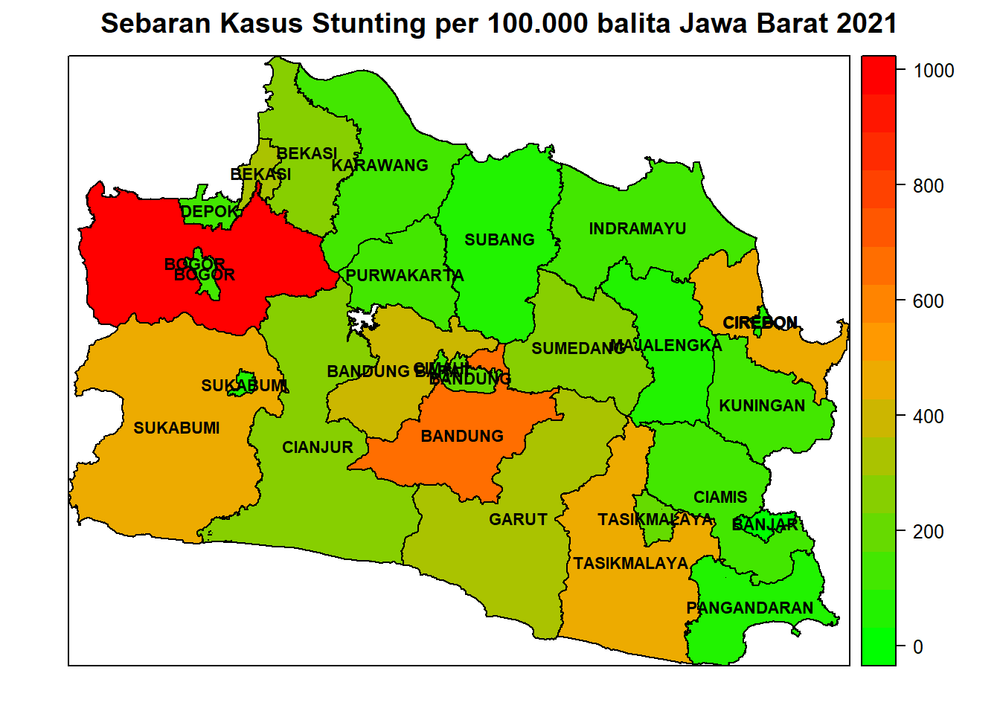
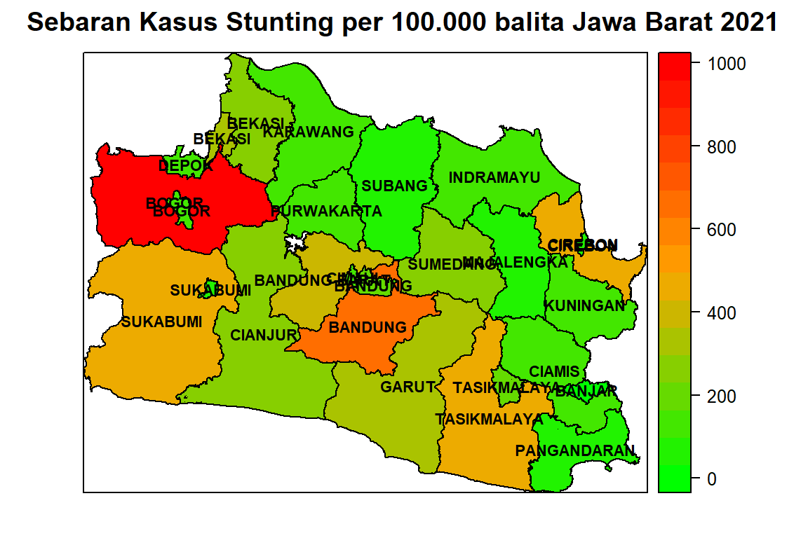
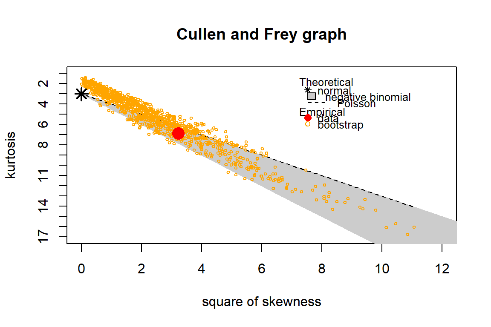
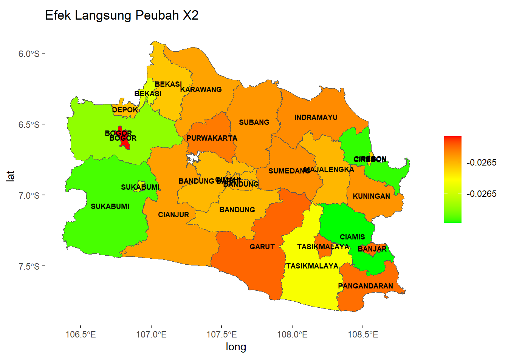

library(AER)
# Warning: package 'AER' was built under R version 4.2.3
# Loading required package: car
# Loading required package: carData
# Loading required package: lmtest
# Loading required package: zoo
# Warning: package 'zoo' was built under R version 4.2.3
#
# Attaching package: 'zoo'
# The following objects are masked from 'package:base':
#
# as.Date, as.Date.numeric
# Loading required package: sandwich
# Warning: package 'sandwich' was built under R version 4.2.3
# Loading required package: survival
library(car)
library(sp)
library(rgdal)
# Please note that rgdal will be retired by the end of 2023,
# plan transition to sf/stars/terra functions using GDAL and PROJ
# at your earliest convenience.
#
# rgdal: version: 1.5-32, (SVN revision 1176)
# Geospatial Data Abstraction Library extensions to R successfully loaded
# Loaded GDAL runtime: GDAL 3.4.3, released 2022/04/22
# Path to GDAL shared files: C:/Users/anugraha/AppData/Local/R/win-library/4.2/rgdal/gdal
# GDAL binary built with GEOS: TRUE
# Loaded PROJ runtime: Rel. 7.2.1, January 1st, 2021, [PJ_VERSION: 721]
# Path to PROJ shared files: D:\My_Development\pgsql13\share\contrib\postgis-3.1\proj
# PROJ CDN enabled: FALSE
# Linking to sp version:1.5-0
# To mute warnings of possible GDAL/OSR exportToProj4() degradation,
# use options("rgdal_show_exportToProj4_warnings"="none") before loading sp or rgdal.
library(corrplot)
# corrplot 0.92 loaded
library(zoo)
library(lmtest)
library(spdep)
# Warning: package 'spdep' was built under R version 4.2.3
# Loading required package: spData
# To access larger datasets in this package, install the
# spDataLarge package with: `install.packages('spDataLarge',
# repos='https://nowosad.github.io/drat/', type='source')`
# Loading required package: sf
# Linking to GEOS 3.9.1, GDAL 3.4.3, PROJ 7.2.1; sf_use_s2() is TRUE
library(MASS)
# Warning: package 'MASS' was built under R version 4.2.3
library(fitdistrplus)
# Warning: package 'fitdistrplus' was built under R version 4.2.3
library(zoo)
library(lmtest)
library(raster)
# Warning: package 'raster' was built under R version 4.2.3
#
# Attaching package: 'raster'
# The following object is masked from 'package:MASS':
#
# select
library(tidyverse)
# ── Attaching packages
# ─────────────────────────── tidyverse
# 1.3.2 ──
# ✔ ggplot2 3.4.0 ✔ purrr 1.0.2
# ✔ tibble 3.1.8 ✔ dplyr 1.0.10
# ✔ tidyr 1.3.0 ✔ stringr 1.5.0
# ✔ readr 2.1.2 ✔ forcats 0.5.2
# Warning: package 'ggplot2' was built under R version 4.2.2
# Warning: package 'tidyr' was built under R version 4.2.3
# Warning: package 'purrr' was built under R version 4.2.3
# Warning: package 'stringr' was built under R version 4.2.3
# Warning: package 'forcats' was built under R version 4.2.2
# ── Conflicts ────────────────────────────── tidyverse_conflicts() ──
# ✖ tidyr::extract() masks raster::extract()
# ✖ dplyr::filter() masks stats::filter()
# ✖ dplyr::lag() masks stats::lag()
# ✖ dplyr::recode() masks car::recode()
# ✖ dplyr::select() masks raster::select(), MASS::select()
# ✖ purrr::some() masks car::some()3 Spasial Autoregresif Binomial Negatif
3.1 Deskripsi
Regresi autoregresif spasial binomial negatif (SAR-BN) adalah pengembangan analisis regresi binomial negatif dengan menambahkan adanya efek spasial pada data. Regresi spasial binomial negatif dapat digunakan pada data cacah yang memiliki dependensi spasial dan kondisi overdispersi. Model regresi spasial BN antara lain:
- Spatial Autoregressive Model (SAR)
SAR merupakan pemodelan pada data dengan menambahkan pengaruh spasial pada peubah respon. Persamaan untuk model SAR sebagai berikut (Anselin 1988):
\(y = \rho W_1 y + X\beta + \varepsilon\)
dengan (y) merupakan peubah respon, (W_1) merupakan matriks pembobot spasial untuk (y), () adalah koefisien parameter regresi, () merupakan sisaan, dan () merupakan koefisien autoregressive lag spasial. Model SAR binomial negatif (SAR BN) dinyatakan sebagai berikut:
\(\mu_i = \exp\left(\rho w_{1i}^{\prime} y + x_i \beta\right)\)
dengan (y_i (_i))
- Spatial Durbin Model (SDM)
SDM merupakan model regresi spasial yang digunakan ketika data memiliki dependensi spasial pada peubah respon dan peubah penjelas sehingga pembobotan spasial dilakukan pada peubah respon dan peubah penjelas. Persamaan untuk SDM sebagai berikut (Anselin 1988):
$y = W_1 y + X+ W_2 X + $
dengan (W_2) merupakan matriks pembobot spasial untuk (X) dan () merupakan koefisien untuk lag spasial pada prediktor. Spatial Durbin model binomial negatif (SDM BN) merupakan model spasial Durbin untuk data cacah dengan overdispersi. Persamaan dari SDM BN sebagai berikut (Glaser 2017):
\(\mu_i = \exp\left(\rho w_{1i}^{\prime} y + x_i \beta + w_{2i}^{\prime} x_i \gamma\right)\)
dengan (y_i (_i))
- Spatial Lag-X (SLX)
SLX adalah model regresi spasial dengan dependensi spasial hanya pada peubah penjelas. Persamaan untuk SLX sebagai berikut (Vega dan Elhorst 2015):
\(y = X\beta + \gamma W_2 X + \varepsilon\)
Spatial lag-x binomial negatif (SLX BN) merupakan model regresi spasial untuk data cacah dengan overdispersi dan terdapat dependensi spasial pada prediktor. Persamaan dari SLX BN sebagai berikut:
\(\mu_i = \exp\left(x_i \beta + w_{2i}^{\prime} x_i \gamma\right)\)
dengan (y_i (_i))
3.2 Data
Ilustrasi model SAR-BN dirujuk dari hasil penelitian Amelia et al. (2023). Data yang digunakan adalah data sekunder yang diperoleh dari Badan Pusat Statistik Jawa Barat, Dinas Kesehatan Provinsi Jawa Barat, dan Profil Kesehatan Provinsi Jawa Barat Tahun 2021 yang dikeluarkan oleh Dinas Kesehatan Jawa Barat tahun 2021. Unit amatan pada penelitian ini adalah 27 kabupaten/kota di Jawa Barat. Peubah yang digunakan dapat dilihat di Tabel berikut. Data dan peta ilustrasi SAR-BN tersedia pada tautan https://ipb.link/sar-binomial-negatif.
\[ \begin{table}[ht] \centering \caption{Deskripsi Peubah} \begin{tabular}{|c|p{8cm}|} \hline \textbf{Kode} & \textbf{Peubah} \\ \hline Y & Banyaknya stunting per 100.000 balita \\ \hline X1 & Persentase balita mendapatkan imunisasi dasar lengkap \\ \hline X2 & Persentase bayi berusia kurang dari 6 bulan mendapat ASI \\ \hline X3 & Persentase tempat pengelolaan makanan memenuhi syarat \\ \hline X4 & Persentase bayi berat badan lahir rendah \\ \hline X5 & Persentase keluarga dengan akses sanitasi layak \\ \hline X6 & Pengeluaran per kapita dalam juta rupiah \\ \hline \end{tabular} \end{table} \]
3.3 Metode Analasis
Analisis data dilakukan dengan menggunakan software R dengan tahapan analisis data sebagai berikut:
-
Eksplorasi Data:
- Melakukan eksplorasi data dengan membuat peta sebaran dari peubah respon.
- Membuat diagram kotak garis peubah respon.
- Membuat plot antara peubah respon dengan peubah penjelas.
- Memeriksa sebaran dari peubah respon.
-
Deteksi Multikolinearitas:
- Melihat nilai Variance Inflation Factor (VIF) untuk mendeteksi multikolinearitas antar peubah penjelas.
-
Pemeriksaan Overdispersi:
- Memeriksa overdispersi menggunakan nilai devians dan khi kuadrat Pearson dibagi dengan derajat bebasnya.
- Jika kedua nilai tersebut lebih dari satu, maka terjadi overdispersi pada data.
-
Pemodelan Regresi:
- Melakukan pemodelan regresi Poisson jika tidak terdapat overdispersi.
- Melakukan pemodelan regresi binomial negatif jika terdapat overdispersi.
-
Uji Efek Spasial:
- Menguji kehomogenan ragam sisaan model regresi klasik dengan uji Breusch-Pagan.
- Pemilihan model dependensi spasial menggunakan uji pengganda Lagrange (Lagrange Multiplier/LM).
- Memeriksa efek dependensi spasial pada prediktor dengan indeks Moran.
- Melakukan pendugaan parameter model regresi spasial binomial negatif berdasarkan hasil uji efek spasial.
-
Evaluasi Model:
- Mengukur kebaikan model berdasarkan nilai Akaike Information Criterion (AIC) terkecil. Persamaan AIC: (AIC = -2L_k + 2p), dengan (L_k) merupakan fungsi kemungkinan maksimum dari model dengan (k) prediktor dan (p) adalah banyaknya parameter.
-
Interpretasi dan Kesimpulan:
- Melakukan interpretasi dari model yang terpilih.
- Menarik kesimpulan berdasarkan hasil analisis.
3.4 Tahapan Analisis Data dengan R
Tahap awal dalam pendugaan model SAR-BN menggunakan R Studio adalah install package yang dibutuhkan. Package yang diinstall sebagai berikut:
Package
Input Data
Tahap selanjutnya melakukan input data menggunakan syntax berikut:
#Input Data
data1 <-read.csv("data/data_stunting.csv", header = TRUE)
Y<-data1[,2]
X1<-data1[,3]
X2<-data1[,4]
X3<-data1[,5]
X4<-data1[,6]
X5<-data1[,7]
X6<-data1[,8]
#
#Input peta SHP
sf_use_s2(FALSE)
# Spherical geometry (s2) switched off
petajawa<- readOGR(dsn = "data/shp/jawa.shp", layer="jawa")
# OGR data source with driver: ESRI Shapefile
# Source: "E:\Materi_Orasi\bookdown\data\shp\jawa.shp", layer: "jawa"
# with 119 features
# It has 5 fields
#
#subset peta Pulau Jawa menjadi Jawa Barat
petajabar <- subset(petajawa,PROVINSI=="JAWA BARAT")
#
#Mendefinisikan long dan lat
longlat <- coordinates(petajabar)
petajabar$long <- longlat[,1] #longitudinal angkanya ratusan
petajabar$lat <- longlat[,2]
#
#Menggabungkan Data ke file SHP
petajabar$Stunting = data1$Stunting
petajabar$imunisasi = data1$imunisasi
petajabar$ASI = data1$ASI
petajabar$TPM = data1$TPM
petajabar$BBLR = data1$BBLR
petajabar$sanitasi = data1$sanitasi
petajabar$pengeluaran = data1$pengeluaran
petajabar$daerah = data1$Kabupaten...KotaEksplorasi Data
Untuk membuat peta tentang sebaran banyaknya stunting per 100.000 balita digunakan syntax sebagai berikut:
#menambahkan list untuk memberi label pada peta
sp.label <- function(x, label) {list("sp.text", coordinates(x), label, cex=0.7, col="black", fontface="bold")}
NUMB.sp.label <- function(x) {sp.label(x, as.vector(petajabar$KABKOT))}
make.NUMB.sp.label <- function(x) {do.call("list", NUMB.sp.label(x))}
#
#Peta Y
colfunc<-colorRampPalette(c("green","orange","red"))
color<-colfunc(1000)
petajabar$Stunting<-data1$Stunting
spplot(petajabar, "Stunting", col.regions=color, sp.layout = make.NUMB.sp.label(petajabar),
cex = 0.5, bg = "white", border="light grey",
main="Sebaran Kasus Stunting per 100.000 balita Jawa Barat 2021")
Diagram kotak garis untuk banyaknya stunting per 100.000 balita dibuat dengan syntax sebagai berikut:
#Box-plot Stunting
boxplot(data1$Stunting, ylab="Banyaknya Stunting per 100.000 balita")
Pemeriksaan sebaran yang paling sesuai untuk data stunting menggunakan grafik Cullen and Frey dan plot kuantil-kuantil dengan menggunakan syntax sebagai berikut:
#Grafik Cullen-Frey
poisson <- fitdist(data1$Stunting, "pois", method = c("mle",
"mme", "qme", "mge", "mse"), start=NULL, fix.arg=NULL, T,
keepdata = TRUE)
binom.negatif <- fitdist(data1$Stunting, "nbinom", method =
c("mle", "mme", "qme", "mge", "mse"), start=NULL,
fix.arg=NULL, T, keepdata = TRUE)
descdist(data1$Stunting, discrete = TRUE, boot=1000)
# summary statistics
# ------
# min: 29 max: 958
# median: 162
# mean: 238
# estimated sd: 214
# estimated skewness: 1.79
# estimated kurtosis: 6.84Pemeriksaan sebaran yang sesuai untuk data stunting dapat juga dilakukan menggunakan plot kuantil-kauntil dengan menggunakan syntax berikut ini:
#Pemeriksaan sebaran menggunakan plot Q-Q
qqcomp(list(poisson, binom.negatif), legendtext = c("Pois",
"Neg Binom"), fitpch="o", fitcol = c("red","green"))
Pada output plot Q-Q terlihat mayoritas titik-titik berwarna hijau (lambang untuk sebaran binomial negatif) berada pada garis dibandingkan dengan titik-titik berwarna merah (lambang untuk sebaran Poisson). Sebaran yang paling sesuai untuk data stunting adalah binomial negatif.
Pemeriksaan Multikolinearitas
Pemeriksaan multikolinearitas menggunakan syntax sebagai berikut:
Berdasarkan output terlihat nilai VIF semua prediktor kecil, sehingga dapat disimpulkan tidak terdapat multikolinearitas.
Uji Overdispersi
Untuk melakukan uji dispersi menggunakan syntax sebagai berikut:
#Model Regresi Poisson
poisson<-glm(Y~X1+X2+X3+X4+X5+X6,data=data1, family = poisson())
#
#Nilai Deviance
dv_df<-deviance(poisson)/df.residual(poisson)
#
#Nilai Chi-Squares
pr_df<-sum(residuals(poisson,"pearson")^2)/df.residual(poisson)
#
#Overdispersi
overdis<-cbind.data.frame(dv_df,pr_df)
overdis
# dv_df pr_df
# 1 100 97.3Kedua nilai statistik uji overdispersi bernilai lebih besar dari satu, maka pada data banyaknya stunting terdapat overdispersi. Untuk menangani oversdispersi pada data digunakan model regresi binomial negatif.
Pemodelan regresi binomial negatif
#Regresi Binomial Negatif
nb<-glm.nb(Y~X1+X2+X3+X4+X5+X6,data=data1)
summary(nb)
#
# Call:
# glm.nb(formula = Y ~ X1 + X2 + X3 + X4 + X5 + X6, data = data1,
# init.theta = 3.160525232, link = log)
#
# Deviance Residuals:
# Min 1Q Median 3Q Max
# -2.5267 -0.7953 0.0392 0.4625 1.9175
#
# Coefficients:
# Estimate Std. Error z value Pr(>|z|)
# (Intercept) 7.50e+00 1.28e+00 5.87 4.3e-09 ***
# X1 4.36e-03 5.54e-03 0.79 0.43092
# X2 -2.23e-02 9.64e-03 -2.31 0.02082 *
# X3 -1.99e-02 6.82e-03 -2.91 0.00358 **
# X4 -1.12e-01 3.27e-02 -3.42 0.00062 ***
# X5 1.82e-02 9.39e-03 1.94 0.05222 .
# X6 -1.20e-04 5.17e-05 -2.32 0.02058 *
# ---
# Signif. codes: 0 '***' 0.001 '**' 0.01 '*' 0.05 '.' 0.1 ' ' 1
#
# (Dispersion parameter for Negative Binomial(3.16) family taken to be 1)
#
# Null deviance: 61.213 on 26 degrees of freedom
# Residual deviance: 28.266 on 20 degrees of freedom
# AIC: 340.6
#
# Number of Fisher Scoring iterations: 1
#
#
# Theta: 3.161
# Std. Err.: 0.835
#
# 2 x log-likelihood: -324.641Pada output regresi binomial negatif terlihat prediktor X2, X3, X4, dan X5 nyata pada α=0.05 dengan AIC model sebesar 340.64.
Uji efek spasial
- Uji LM dan indeks Moran Untuk menentukan Indeks Moran dan uji LM, terlebih dulu dibangun matriks bobot, Pada ilustrasi ini digunakan matriks ketetanggan langkah ratu, k-nearest neighbor, inverse distance weight, dan negative exponential. Syntax yang digunakan untuk membuat matriks bobot dan menghitung Indeks Moran sebagai berikut:
#Menghitung jarak Euclidean
djarak<-dist(longlat)
m.djarak<-as.matrix(djarak)
#
#Matriks Pembobot langkah ratu
queen.nb=poly2nb(petajabar, queen = TRUE)
# although coordinates are longitude/latitude, st_intersects assumes that they are planar
queen.listw=nb2listw(queen.nb)
queen.jabar= queen.listw
#
#Matriks Pembobot KNN dengan K = 1
W.knn1 <- knn2nb(knearneigh(longlat, k=1, longlat=TRUE)) #matriks bobot dengan
W.knn1.s <- nb2listw(W.knn1, style='W')
knn1.jabar <- W.knn1.s
#
#Matriks Pembobot KNN dengan K = 2
W.knn2 <- knn2nb(knearneigh(longlat, k=2, longlat=TRUE)) #matriks bobot dengan
W.knn2.s <- nb2listw(W.knn2, style='W')
knn2.jabar <- W.knn2.s
#
#Matriks Pembobot KNN dengan K = 3
W.knn3 <- knn2nb(knearneigh(longlat, k=3, longlat=TRUE)) #matriks bobot dengan
W.knn3.s <- nb2listw(W.knn3, style='W')
knn3.jabar <- W.knn3.s
#
#Matriks Pembobot KNN dengan K = 4
W.knn4 <- knn2nb(knearneigh(longlat, k=4, longlat=TRUE)) #matriks bobot dengan
W.knn4.s <- nb2listw(W.knn4, style='W')
knn4.jabar <- W.knn4.s
#
#Matriks Pembobot KNN dengan K = 5
W.knn5 <- knn2nb(knearneigh(longlat, k=5, longlat=TRUE)) #matriks bobot dengan
W.knn5.s <- nb2listw(W.knn5, style='W')
knn5.jabar <- W.knn5.s
#
#Matriks Pembobot IDW alpha = 1
alpha1=1
W.idw1 <- 1/(m.djarak^alpha1)
#dinormalisasi
diag(W.idw1) <- 0
rtot1 <- rowSums(W.idw1,na.rm=TRUE)
W.idw.sd1 <- W.idw1/rtot1 #row-normalized
W.idw.s1 = mat2listw(W.idw.sd1, style='W')
idw1.jabar <- W.idw.s1
#
#Matriks Pembobot IDW alpha = 2
alpha2=2
W.idw2 <- 1/(m.djarak^alpha2)
#dinormalisasi
diag(W.idw2) <- 0
rtot2 <- rowSums(W.idw2,na.rm=TRUE)
W.idw.sd2 <- W.idw2/rtot2 #row-normalized
rowSums(W.idw.sd2,na.rm=TRUE)
# 6 7 8 9 10 11 12 13 14 15 16 17 18 19 20 21 22 23 24 25 26 27
# 1 1 1 1 1 1 1 1 1 1 1 1 1 1 1 1 1 1 1 1 1 1
# 28 29 30 31 32
# 1 1 1 1 1
W.idw.s2 = mat2listw(W.idw.sd2, style='W')
idw2.jabar <- W.idw.s2
#
#Matriks Pembobot eksponensial alpha = 1
alpha3=1
W.eksp1 <- exp((-alpha3)*m.djarak)
#dinormalisasi
diag(W.eksp1) <- 0
rtot3 <- rowSums(W.eksp1, na.rm=TRUE)
W.eksp.sd1 <- W.eksp1/rtot3 #row-normalized
W.eksp.s1 = mat2listw(W.eksp.sd1, style='W')
eks1.jabar <- W.eksp.s1
#
#Matriks Pembobot Eksponensial alpha = 2
alpha4=2
W.eksp2 <- exp((-alpha4)*m.djarak)
#dinormalisasi
diag(W.eksp2) <- 0
rtot4 <- rowSums(W.eksp2, na.rm=TRUE)
W.eksp.sd2 <- W.eksp2/rtot4 #row-normalized
W.eksp.s2 = mat2listw(W.eksp.sd2, style='W')
eks2.jabar <- W.eksp.s2Setelah dibuat matriks pembobot, dilakukan pengujian indeks Moran dengan menggunakan semua matriks pembobot pada semua prediktor.
#Indeks Moran dan Nilai-p peubah X1
x1.q <- moran.test(petajabar$imunisasi,queen.jabar,randomisation=T)
x1.k1 <- moran.test(petajabar$imunisasi,knn1.jabar,randomisation=T)
x1.k2 <- moran.test(petajabar$imunisasi,knn2.jabar,randomisation=T)
x1.k3 <-moran.test(petajabar$imunisasi,knn3.jabar,randomisation=T)
x1.k4 <-moran.test(petajabar$imunisasi,knn4.jabar,randomisation=T)
x1.k5 <-moran.test(petajabar$imunisasi,knn5.jabar,randomisation=T)
x1.eks1 <- moran.test(petajabar$imunisasi,eks1.jabar,randomisation=T)
x1.eks2 <- moran.test(petajabar$imunisasi,eks2.jabar,randomisation=T)
x1.idw1 <- moran.test(petajabar$imunisasi,idw1.jabar,randomisation=T)
x1.idw2 <- moran.test(petajabar$imunisasi,idw2.jabar,randomisation=T)
tab <- matrix(c(x1.q$statistic, x1.k1$statistic,
x1.k2$statistic, x1.k3$statistic, x1.k4$statistic,
x1.k5$statistic, x1.eks1$statistic, x1.eks2$statistic,
x1.idw1$statistic, x1.idw2$statistic, x1.q$p.value,
x1.k1$p.value, x1.k2$p.value, x1.k3$p.value,
x1.k4$p.value, x1.k5$p.value, x1.eks1$p.value,
x1.eks2$p.value, x1.idw1$p.value, x1.idw2$p.value),
ncol=2, byrow=F)
colnames(tab) <- c('Indeks Moran','P-Value')
rownames(tab) <- c('Queen','1-NN','2-NN', '3-NN', '4-NN',
"5-NN", "Eks a=1", "Eks a=2", "IDW a=1", "IDW a=2")
tab <- as.table(tab)
tab
# Indeks Moran P-Value
# Queen 1.1359 0.1280
# 1-NN -0.2844 0.6119
# 2-NN 1.0040 0.1577
# 3-NN 1.3998 0.0808
# 4-NN 1.3841 0.0832
# 5-NN 1.3568 0.0874
# Eks a=1 1.0245 0.1528
# Eks a=2 0.8734 0.1912
# IDW a=1 -1.2322 0.8911
# IDW a=2 -0.6401 0.7389Pada output Indeks Moran untuk prediktor X1 dengan matriks bobot 3-Nearest Neighbor memiliki yang paling besar dan nilai-p paling kecil, akan tetapi tidak nyata pada α=0.05.
#Indeks Moran dan Nilai-p peubah X2
x2.q <- moran.test(petajabar$ASI,queen.jabar,randomisation=T)
x2.k1 <- moran.test(petajabar$ASI,knn1.jabar,randomisation=T)
x2.k2 <- moran.test(petajabar$ASI,knn2.jabar,randomisation=T)
x2.k3 <-moran.test(petajabar$ASI,knn3.jabar,randomisation=T)
x2.k4 <-moran.test(petajabar$ASI,knn4.jabar,randomisation=T)
x2.k5 <-moran.test(petajabar$ASI,knn5.jabar,randomisation=T)
x2.eks1 <- moran.test(petajabar$ASI,eks1.jabar,randomisation=T)
x2.eks2 <- moran.test(petajabar$ASI,eks2.jabar,randomisation=T)
x2.idw1 <- moran.test(petajabar$ASI,idw1.jabar,randomisation=T)
x2.idw2 <- moran.test(petajabar$ASI,idw2.jabar,randomisation=T)
tab <- matrix(c(x2.q$statistic, x2.k1$statistic, x2.k2$statistic,
x2.k3$statistic, x2.k4$statistic, x2.k5$statistic,
x2.eks1$statistic, x2.eks2$statistic, x2.idw1$statistic,
x2.idw2$statistic, x2.q$p.value, x2.k1$p.value,
x2.k2$p.value, x2.k3$p.value, x2.k4$p.value,
x2.k5$p.value, x2.eks1$p.value, x2.eks2$p.value,
x2.idw1$p.value, x2.idw2$p.value), ncol=2, byrow=F)
colnames(tab) <- c('Indeks Moran','P-Value')
rownames(tab) <- c('Queen','1-NN','2-NN', '3-NN', '4-NN', "5-NN",
"Eks a=1", "Eks a=2", "IDW a=1", "IDW a=2")
tab <- as.table(tab)
tab
# Indeks Moran P-Value
# Queen 0.96677 0.16683
# 1-NN 1.64900 0.04957
# 2-NN 1.01098 0.15601
# 3-NN 1.57087 0.05811
# 4-NN 1.28312 0.09973
# 5-NN 1.33135 0.09154
# Eks a=1 2.71191 0.00334
# Eks a=2 2.36743 0.00896
# IDW a=1 1.94376 0.02596
# IDW a=2 2.39691 0.00827Pada output di atas terlihat bahwa pada pengujian indeks Moran peubah X2, matriks bobot Eksponential alpha=1 memiliki nilai-p paling kecil dan nyata pada α=0.05.
#Indeks Moran dan Nilai-p peubah X3
x3.q <- moran.test(petajabar$TPM,queen.jabar,randomisation=T)
x3.k1 <- moran.test(petajabar$TPM,knn1.jabar,randomisation=T)
x3.k2 <- moran.test(petajabar$TPM,knn2.jabar,randomisation=T)
x3.k3 <-moran.test(petajabar$TPM,knn3.jabar,randomisation=T)
x3.k4 <-moran.test(petajabar$TPM,knn4.jabar,randomisation=T)
x3.k5 <-moran.test(petajabar$TPM,knn5.jabar,randomisation=T)
x3.eks1 <- moran.test(petajabar$TPM,eks1.jabar,randomisation=T)
x3.eks2 <- moran.test(petajabar$TPM,eks2.jabar,randomisation=T)
x3.idw1 <- moran.test(petajabar$TPM,idw1.jabar,randomisation=T)
x3.idw2 <- moran.test(petajabar$TPM,idw2.jabar,randomisation=T)
tab <- matrix(c(x3.q$statistic, x3.k1$statistic, x3.k2$statistic,
x3.k3$statistic, x3.k4$statistic, x3.k5$statistic,
x3.eks1$statistic, x3.eks2$statistic, x3.idw1$statistic,
x3.idw2$statistic, x3.q$p.value, x3.k1$p.value,
x3.k2$p.value, x3.k3$p.value, x3.k4$p.value,
x3.k5$p.value, x3.eks1$p.value, x3.eks2$p.value,
x3.idw1$p.value, x3.idw2$p.value), ncol=2, byrow=F)
colnames(tab) <- c('Indeks Moran','P-Value')
rownames(tab) <- c('Queen','1-NN','2-NN', '3-NN', '4-NN', "5-NN",
"Eks a=1", "Eks a=2", "IDW a=1", "IDW a=2")
tab <- as.table(tab)
tab
# Indeks Moran P-Value
# Queen 1.10899 0.13372
# 1-NN 1.40712 0.07970
# 2-NN 2.17584 0.01478
# 3-NN 2.61314 0.00449
# 4-NN 1.81923 0.03444
# 5-NN 1.17499 0.12000
# Eks a=1 0.57812 0.28159
# Eks a=2 0.99473 0.15993
# IDW a=1 1.72700 0.04208
# IDW a=2 1.70949 0.04368Pada output di atas terlihat bahwa pada pengujian indeks Moran peubah X3, matriks bobot 3-nearest neighbor memiliki nilai-p paling kecil dan nyata pada α=0.05.
#Indeks Moran dan Nilai-p peubah X4
x4.q <- moran.test(petajabar$BBLR,queen.jabar,randomisation=T)
x4.k1 <- moran.test(petajabar$BBLR,knn1.jabar,randomisation=T)
x4.k2 <- moran.test(petajabar$BBLR,knn2.jabar,randomisation=T)
x4.k3 <-moran.test(petajabar$BBLR,knn3.jabar,randomisation=T)
x4.k4 <-moran.test(petajabar$BBLR,knn4.jabar,randomisation=T)
x4.k5 <-moran.test(petajabar$BBLR,knn5.jabar,randomisation=T)
x4.eks1 <- moran.test(petajabar$BBLR,eks1.jabar,randomisation=T)
x4.eks2 <- moran.test(petajabar$BBLR,eks2.jabar,randomisation=T)
x4.idw1 <- moran.test(petajabar$BBLR,idw1.jabar,randomisation=T)
x4.idw2 <- moran.test(petajabar$BBLR,idw2.jabar,randomisation=T)
tab <- matrix(c(x4.q$statistic, x4.k1$statistic,
x4.k2$statistic, x4.k3$statistic, x4.k4$statistic,
x4.k5$statistic, x4.eks1$statistic, x4.eks2$statistic,
x4.idw1$statistic, x4.idw2$statistic, x4.q$p.value,
x4.k1$p.value, x4.k2$p.value, x4.k3$p.value,
x4.k4$p.value, x4.k5$p.value, x4.eks1$p.value,
x4.eks2$p.value, x4.idw1$p.value, x4.idw2$p.value),
ncol=2, byrow=F)
colnames(tab) <- c('Indeks Moran','P-Value')
rownames(tab) <- c('Queen','1-NN','2-NN', '3-NN', '4-NN', "5-NN",
"Eks a=1", "Eks a=2", "IDW a=1", "IDW a=2")
tab <- as.table(tab)
tab
# Indeks Moran P-Value
# Queen 2.28e+00 1.14e-02
# 1-NN 2.25e+00 1.23e-02
# 2-NN 3.01e+00 1.32e-03
# 3-NN 3.01e+00 1.31e-03
# 4-NN 3.42e+00 3.15e-04
# 5-NN 4.11e+00 1.95e-05
# Eks a=1 6.50e+00 3.92e-11
# Eks a=2 5.99e+00 1.07e-09
# IDW a=1 2.71e+00 3.40e-03
# IDW a=2 2.96e+00 1.56e-03Pada output di atas terlihat bahwa pada pengujian indeks Moran peubah X4, matriks bobot exponential alpha =1 memiliki nilai-p paling kecil dan nyata pada α=0.05.
#Indeks Moran dan Nilai-p peubah X5
x5.q <- moran.test(petajabar$sanitasi,queen.jabar,randomisation=T)
x5.k1 <- moran.test(petajabar$sanitasi,knn1.jabar,randomisation=T)
x5.k2 <- moran.test(petajabar$sanitasi,knn2.jabar,randomisation=T)
x5.k3 <-moran.test(petajabar$sanitasi,knn3.jabar,randomisation=T)
x5.k4 <-moran.test(petajabar$sanitasi,knn4.jabar,randomisation=T)
x5.k5 <-moran.test(petajabar$sanitasi,knn5.jabar,randomisation=T)
x5.eks1 <- moran.test(petajabar$sanitasi,eks1.jabar,randomisation=T)
x5.eks2 <- moran.test(petajabar$sanitasi,eks2.jabar,randomisation=T)
x5.idw1 <- moran.test(petajabar$sanitasi,idw1.jabar,randomisation=T)
x5.idw2 <- moran.test(petajabar$sanitasi,idw2.jabar,randomisation=T)
tab <- matrix(c(x5.q$statistic, x5.k1$statistic,
x5.k2$statistic, x5.k3$statistic, x5.k4$statistic,
x5.k5$statistic, x5.eks1$statistic, x5.eks2$statistic,
x5.idw1$statistic, x5.idw2$statistic, x5.q$p.value,
x5.k1$p.value, x5.k2$p.value, x5.k3$p.value,
x5.k4$p.value, x5.k5$p.value, x5.eks1$p.value,
x5.eks2$p.value, x5.idw1$p.value, x5.idw2$p.value),
ncol=2, byrow=F)
colnames(tab) <- c('Indeks Moran','P-Value')
rownames(tab) <- c('Queen','1-NN','2-NN', '3-NN', '4-NN',
"5-NN", "Eks a=1", "Eks a=2", "IDW a=1", "IDW a=2")
tab <- as.table(tab)
tab
# Indeks Moran P-Value
# Queen 0.316 0.376
# 1-NN 1.021 0.154
# 2-NN 0.450 0.326
# 3-NN -0.781 0.783
# 4-NN -1.425 0.923
# 5-NN -2.018 0.978
# Eks a=1 -0.931 0.824
# Eks a=2 -0.857 0.804
# IDW a=1 0.218 0.414
# IDW a=2 0.464 0.321Pada output di atas terlihat bahwa pada pengujian indeks Moran peubah X5, matriks bobot 1-nearest neighbor memiliki nilai-p paling kecil, akan tetapi tidak nyata pada α=0.05.
#Indeks Moran dan Nilai-p peubah X6
x6.q <- moran.test(petajabar$pengeluaran,queen.jabar,randomisation=T)
x6.k1 <- moran.test(petajabar$pengeluaran,knn1.jabar,randomisation=T)
x6.k2 <- moran.test(petajabar$pengeluaran,knn2.jabar,randomisation=T)
x6.k3 <-moran.test(petajabar$pengeluaran,knn3.jabar,randomisation=T)
x6.k4 <-moran.test(petajabar$pengeluaran,knn4.jabar,randomisation=T)
x6.k5 <-moran.test(petajabar$pengeluaran,knn5.jabar,randomisation=T)
x6.eks1 <- moran.test(petajabar$pengeluaran,eks1.jabar,randomisation=T)
x6.eks2 <- moran.test(petajabar$pengeluaran,eks2.jabar,randomisation=T)
x6.idw1 <- moran.test(petajabar$pengeluaran,idw1.jabar,randomisation=T)
x6.idw2 <- moran.test(petajabar$pengeluaran,idw2.jabar,randomisation=T)
tab <- matrix(c(x6.q$statistic, x6.k1$statistic,
x6.k2$statistic, x6.k3$statistic, x6.k4$statistic,
x6.k5$statistic, x6.eks1$statistic, x6.eks2$statistic,
x6.idw1$statistic, x6.idw2$statistic, x6.q$p.value,
x6.k1$p.value, x6.k2$p.value, x6.k3$p.value,
x6.k4$p.value, x6.k5$p.value, x6.eks1$p.value,
x6.eks2$p.value, x6.idw1$p.value, x6.idw2$p.value),
ncol=2, byrow=F)
colnames(tab) <- c('Indeks Moran','P-Value')
rownames(tab) <- c('Queen','1-NN','2-NN', '3-NN', '4-NN',
"5-NN", "Eks a=1", "Eks a=2", "IDW a=1", "IDW a=2")
tab <- as.table(tab)
tab
# Indeks Moran P-Value
# Queen 2.50644 0.00610
# 1-NN 0.78374 0.21660
# 2-NN 1.97614 0.02407
# 3-NN 2.07182 0.01914
# 4-NN 1.92178 0.02732
# 5-NN 2.06378 0.01952
# Eks a=1 2.80507 0.00252
# Eks a=2 2.65023 0.00402
# IDW a=1 1.28465 0.09946
# IDW a=2 1.64738 0.04974Pada output di atas terlihat bahwa pada pengujian indeks Moran peubah X6, matriks bobot exponential alpha = 1 memiliki nilai-p paling kecil dan nyata pada α=0.05.
Pengujian LM dengan matriks pembobot Queen menggunakan syntax sebagai berikut:
#Uji LM
reglin<-lm(log(Y)~X1+X2+X3+X4+X5+X6)
#
#LM dengan queen
LM_Queen<-lm.RStests(reglin, queen.jabar,
test=c("LMerr", "LMlag","RLMerr","RLMlag"))
summary(LM_Queen)
# Rao's score (a.k.a Lagrange multiplier) diagnostics for
# spatial dependence
# data:
# model: lm(formula = log(Y) ~ X1 + X2 + X3 + X4 + X5 + X6)
# test weights: queen.jabar
#
# statistic parameter p.value
# RSerr 0.0935 1 0.760
# RSlag 1.3208 1 0.250
# adjRSerr 2.7547 1 0.097 .
# adjRSlag 3.9821 1 0.046 *
# ---
# Signif. codes: 0 '***' 0.001 '**' 0.01 '*' 0.05 '.' 0.1 ' ' 1Output uji menunjukan RLMlag nyata pada α=0.05, sehingga model yang cocok digunakan adalah SAR.
b. Uji Breusch-Pagan Uji Breusch-Pagan dihitung menggunakan syntax berikut:
#Uji Breusch-Pagan
bptest(reglin)
#
# studentized Breusch-Pagan test
#
# data: reglin
# BP = 5, df = 6, p-value = 0.6Nilai statistik uji Breusch-Pagan mempunyai nilai-p > α=0.05, sehingga dapat disimpulkan tidak terdapat heterogenitas spasial.
Pendugaan Model Spasial Binomial Negatif
Pendugaan model SAR-BN dengan matriks pembobot Queen menggunakan syntax sebagai berikut:
#SAR-BN
petajabar$lagY<-lag.listw(x=queen.jabar, var=petajabar$Stunting)
SAR<-glm.nb(petajabar$Stunting~lagY+imunisasi+ASI+TPM+BBLR
+sanitasi+pengeluaran,data=petajabar)
summary(SAR)
#
# Call:
# glm.nb(formula = petajabar$Stunting ~ lagY + imunisasi + ASI +
# TPM + BBLR + sanitasi + pengeluaran, data = petajabar, init.theta = 3.563230447,
# link = log)
#
# Deviance Residuals:
# Min 1Q Median 3Q Max
# -2.9239 -0.7178 0.0416 0.5252 1.6024
#
# Coefficients:
# Estimate Std. Error z value Pr(>|z|)
# (Intercept) 8.53e+00 1.32e+00 6.47 9.6e-11 ***
# lagY -1.81e-03 8.81e-04 -2.05 0.0402 *
# imunisasi -3.18e-03 6.18e-03 -0.52 0.6065
# ASI -2.65e-02 9.34e-03 -2.84 0.0045 **
# TPM -1.49e-02 7.04e-03 -2.12 0.0338 *
# BBLR -1.38e-01 3.36e-02 -4.12 3.8e-05 ***
# sanitasi 1.61e-02 9.08e-03 1.77 0.0769 .
# pengeluaran -6.54e-05 5.59e-05 -1.17 0.2419
# ---
# Signif. codes: 0 '***' 0.001 '**' 0.01 '*' 0.05 '.' 0.1 ' ' 1
#
# (Dispersion parameter for Negative Binomial(3.56) family taken to be 1)
#
# Null deviance: 68.838 on 26 degrees of freedom
# Residual deviance: 28.064 on 19 degrees of freedom
# AIC: 339.1
#
# Number of Fisher Scoring iterations: 1
#
#
# Theta: 3.563
# Std. Err.: 0.948
#
# 2 x log-likelihood: -321.134Pada output model SAR-BN terlihat prediktor signifikan pada kasus stunting adalah ASI, TPM, dan BBLR. Nilai AIC model sebesar 339.13.
Pendugaan model SLX-BN dengan matriks pembobot untuk lag-prediktor sesuai hasil pada langkah (5) menggunakan syntax sebagai berikut:
#SLX-BN
peubah.x2 <- as.matrix(data1[,4])
peubah.x3 <- as.matrix(data1[,5])
peubah.x4 <- as.matrix(data1[,6])
peubah.x6 <- as.matrix(data1[,8])
W.knn3.mat <- nb2mat(W.knn3)
petajabar$lag.x2 <- W.eksp.sd1%*%peubah.x2
petajabar$lag.x3 <- W.knn3.mat%*%peubah.x3
petajabar$lag.x4 <- W.eksp.sd1%*%peubah.x4
petajabar$lag.x6 <- W.eksp.sd1%*%peubah.x6
slx_reg<-glm.nb(Stunting ~imunisasi+ASI+TPM+BBLR+sanitasi
+pengeluaran+lag.x2+lag.x3+lag.x4+lag.x6,
data=petajabar)
summary(slx_reg)
#
# Call:
# glm.nb(formula = Stunting ~ imunisasi + ASI + TPM + BBLR + sanitasi +
# pengeluaran + lag.x2 + lag.x3 + lag.x4 + lag.x6, data = petajabar,
# init.theta = 3.639873748, link = log)
#
# Deviance Residuals:
# Min 1Q Median 3Q Max
# -2.685 -1.051 0.175 0.529 1.429
#
# Coefficients:
# Estimate Std. Error z value Pr(>|z|)
# (Intercept) -2.45e+01 3.36e+01 -0.73 0.46582
# imunisasi 4.22e-03 6.56e-03 0.64 0.52041
# ASI 3.19e-03 1.88e-02 0.17 0.86533
# TPM -2.62e-02 7.45e-03 -3.52 0.00043 ***
# BBLR -1.35e-01 5.22e-02 -2.59 0.00963 **
# sanitasi 1.94e-02 8.94e-03 2.17 0.02982 *
# pengeluaran -8.34e-05 1.03e-04 -0.81 0.42002
# lag.x2 3.06e-01 2.39e-01 1.28 0.20111
# lag.x3 1.73e-02 1.07e-02 1.61 0.10707
# lag.x4 -6.47e-01 6.85e-01 -0.94 0.34516
# lag.x6 9.68e-04 1.67e-03 0.58 0.56107
# ---
# Signif. codes: 0 '***' 0.001 '**' 0.01 '*' 0.05 '.' 0.1 ' ' 1
#
# (Dispersion parameter for Negative Binomial(3.64) family taken to be 1)
#
# Null deviance: 70.285 on 26 degrees of freedom
# Residual deviance: 28.022 on 16 degrees of freedom
# AIC: 344.5
#
# Number of Fisher Scoring iterations: 1
#
#
# Theta: 3.640
# Std. Err.: 0.970
#
# 2 x log-likelihood: -320.509Pada output model SLX-BN terlihat prediktor signifikan pada kasus stunting adalah ASI, BBLR, dan sanitasi. Nilai AIC model sebesar 344.51.
Pendugaan model SDM-BN dengan matriks pembobot untuk lag-prediktor sesuai hasil pada langkah (5) dan matriks pembobot Queen untuk Y menggunakan syntax sebagai berikut:
#SDM-BN
sdm_reg<-glm.nb(Stunting ~ imunisasi+ASI+TPM+BBLR+sanitasi
+pengeluaran+lagY+lag.x2+lag.x3+lag.x4+lag.x6,
data=petajabar)
summary(sdm_reg)
#
# Call:
# glm.nb(formula = Stunting ~ imunisasi + ASI + TPM + BBLR + sanitasi +
# pengeluaran + lagY + lag.x2 + lag.x3 + lag.x4 + lag.x6, data = petajabar,
# init.theta = 3.889296943, link = log)
#
# Deviance Residuals:
# Min 1Q Median 3Q Max
# -2.945 -0.778 0.147 0.482 1.380
#
# Coefficients:
# Estimate Std. Error z value Pr(>|z|)
# (Intercept) 6.069873 36.821197 0.16 0.8691
# imunisasi 0.000848 0.006862 0.12 0.9017
# ASI -0.015518 0.021697 -0.72 0.4745
# TPM -0.018185 0.008524 -2.13 0.0329 *
# BBLR -0.147939 0.050770 -2.91 0.0036 **
# sanitasi 0.016905 0.008879 1.90 0.0569 .
# pengeluaran -0.000104 0.000100 -1.03 0.3008
# lagY -0.001595 0.001053 -1.52 0.1297
# lag.x2 0.069089 0.275072 0.25 0.8017
# lag.x3 0.011474 0.011244 1.02 0.3075
# lag.x4 -0.567764 0.674977 -0.84 0.4003
# lag.x6 -0.000144 0.001702 -0.08 0.9324
# ---
# Signif. codes: 0 '***' 0.001 '**' 0.01 '*' 0.05 '.' 0.1 ' ' 1
#
# (Dispersion parameter for Negative Binomial(3.89) family taken to be 1)
#
# Null deviance: 74.985 on 26 degrees of freedom
# Residual deviance: 27.941 on 15 degrees of freedom
# AIC: 344.6
#
# Number of Fisher Scoring iterations: 1
#
#
# Theta: 3.89
# Std. Err.: 1.04
#
# 2 x log-likelihood: -318.62Pada output model SDM-BN terlihat prediktor signifikan pada kasus stunting adalah TPM dan BBLR. Nilai AIC model sebesar 344.62.
Kebaikan Model
Untuk memilih model terbaik digunakan nilai AIC dengan syntax sebagai berikut:
#AIC SAR, SLX, SDM
AIC.BN <- AIC(nb)
AIC.SAR <- AIC(SAR)
AIC.SLX <- AIC(slx_reg)
AIC.SDM <- AIC(sdm_reg)
nilai.aic <- matrix(c(AIC.BN, AIC.SAR, AIC.SLX, AIC.SDM), ncol=1,
byrow=F)
colnames(nilai.aic) <- c('AIC')
rownames(nilai.aic) <- c('Regresi Binomial Negatif',
'SAR-BN','SLX-BN', 'SDM-BN')
nilai.aic <- as.table(nilai.aic)
nilai.aic
# AIC
# Regresi Binomial Negatif 341
# SAR-BN 339
# SLX-BN 345
# SDM-BN 345Pada output terlihat nilai AIC terkecil dimiliki model SAR-BN, sehingga disimpulkan model SAR-BN merupakan model terbaik.
Interpretasi Model
Interpretasi pada koefisien regresi spasial dilakukan dengan melihat nilai efek langsung (direct effect), efek tidak langsung (indirect effect), dan efek total (total effect) menggunakan syntax sebagai berikut:
#Membuat matriks identitas
I <- matrix(0, 27, 27)
diag(I) <- 1
It <- matrix(1, 27, 1)
It_transpose <- t(It)
#
#Matriks Pembobot
queen <- nb2mat(queen.nb)
W <- as.matrix(queen)
rho <- SAR$coefficients[2]
rhow <- rho*W
op <- I - rhow
invers <- solve(op)
#
#X2
beta2 <- SAR$coefficients[4]
b2 <- beta2*invers #matriks untuk direct effect
de_x2 <- mean(diag(b2))
te_x2 <- (1/27)*It_transpose%*%b2%*%It
ie_x2 <- te_x2 - de_x2
#
#X3
beta3 <- SAR$coefficients[5]
b3 <- beta3*invers #matriks untuk direct effect
de_x3 <- mean(diag(b3))
te_x3 <- (1/27)*It_transpose%*%b3%*%It
ie_x3 <- te_x3 - de_x3
#
#X4
beta4 <- SAR$coefficients[6]
b4 <- beta4*invers #matriks untuk direct effect
de_x4 <- mean(diag(b4))
te_x4 <- (1/27)*It_transpose%*%b4%*%It
ie_x4 <- te_x4 - de_x4
#
#Penyajian DE, IE, TE
marginal <- matrix(c(de_x2, de_x3, de_x4, ie_x2, ie_x3, ie_x4,
te_x2, te_x3, te_x4), ncol=3, byrow=F)
colnames(marginal) <- c('Efek Langsung', 'Efek Tidak Langsung',
'Efek Total')
rownames(marginal) <- c('X2','X3','X4')
marginal <- as.table(marginal)
marginal
# Efek Langsung Efek Tidak Langsung Efek Total
# X2 -2.65e-02 4.79e-05 -2.65e-02
# X3 -1.49e-02 2.70e-05 -1.49e-02
# X4 -1.38e-01 2.49e-04 -1.38e-01Efek langsung dan efek tidak langsung dari setiap prediktor di Kabupaten/Kota dapat sajikan dalam peta. Nilai DE dan IE untuk X2 tiap Kabupaten/Kota dihitung lebih dulu dengan syntax sebagai berikut:
#Efek DE dan IE pada kabupaten/Kota untuk X2
direct_b2 <- as.matrix(diag(b2))
direct_b2_kab <- cbind(petajabar$KABKOT, direct_b2)
b2.2 <- b2
diag(b2.2) <- 0 #matriks untuk indirect effect
indirect_b2 <- as.matrix(rowSums(b2.2))
indirect_b2_kab <- cbind(petajabar$KABKOT, indirect_b2)
dat.map <- st_read("data/shp/jawa.shp")
# Reading layer `jawa' from data source
# `E:\Materi_Orasi\bookdown\data\shp\jawa.shp' using driver `ESRI Shapefile'
# Simple feature collection with 119 features and 5 fields
# Geometry type: MULTIPOLYGON
# Dimension: XY
# Bounding box: xmin: 105 ymin: -8.78 xmax: 116 ymax: -5.05
# Geodetic CRS: WGS 84
dat.map <- dat.map %>% filter(PROVNO == "32")
dat.map$long <- longlat[,1]
dat.map$lat <- longlat[,2]Selanjutnya membuat peta untuk nilai DE X2 tiap Kabupaten/Kota menggunakan syntax berikut:
#Peta DE untuk X2
dat.map$de_x2<-as.numeric(direct_b2)
mycol <- c("green", "yellow", "red")
peta.de <- ggplot() +
geom_sf(data = dat.map, mapping = aes(geometry = geometry,
fill = de_x2)) + scale_fill_gradientn(colours = mycol,
name = NULL) + geom_text(data = dat.map, aes(long, lat,
label = KABKOT, fontface = "bold"), color = "black", size = 2.5)+
labs(title = "Efek Langsung Peubah X2") +
theme(panel.background = element_rect(fill = "white"))
peta.de
Untuk membuat peta IE X2 menggunakan syntax berikut ini:
#Peta IE
dat.map$ie_x2<-as.numeric(indirect_b2)
peta.ie <- ggplot() +
geom_sf(data = dat.map, mapping = aes(geometry = geometry,
fill = ie_x2)) + scale_fill_gradientn(colours = mycol,
name = NULL) + geom_text(data = dat.map, aes(long, lat,
label = KABKOT, fontface = "bold"), color = "black",
size = 2.5)+labs(title = "Efek Tak Langsung Peubah X2") +
theme(panel.background = element_rect(fill = "white"))
peta.ie